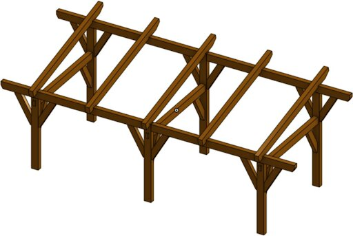
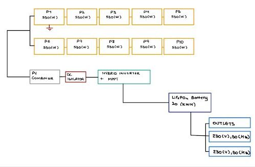

Innovation for Impact
Solar for Cienfuegos.
Engineering resilience for rural Cuba.
The Challenge & Objective
Residents in rural Cienfuegos face daily blackouts lasting 18 to 21 hours. Our team designed a 48V DC off-grid microgrid to restore essential services including refrigeration, lighting, and fans.

Structural Design: Treated timber frame anchored by ground screws to withstand 270 km/h gusts.

Electrical Integration: 5kW hybrid inverter with a 20kWh LiFePO4 battery bank for 24-hour autonomy.
Engineering Perspective & Outcomes
The system utilizes 10 recycled solar panels delivering 21kWh daily, exceeding the 15kWh requirement. My specific role involved developing the Arduino-based physical prototype to monitor real-time environmental data.